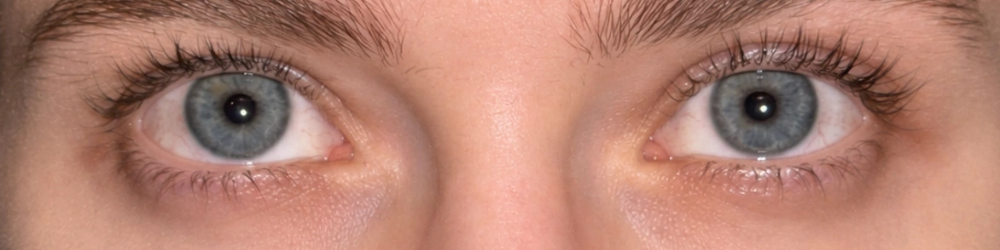
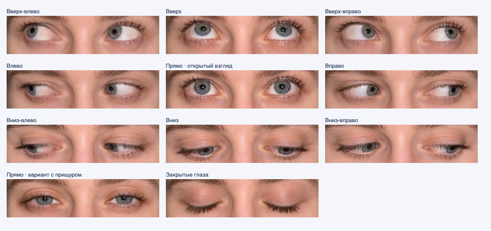

Проведи курсором вокруг окошка. Здесь можно сравнить два взгляда прямо, проверить диагонали и моргание.

Кнопки включают ручную проверку. Для возвращения к курсору включи «Следить за курсором».
Загружаю кадры…
Направления указаны относительно экрана. Нижний ряд — сохранённый прищур и отдельный кадр с полностью закрытыми глазами.
